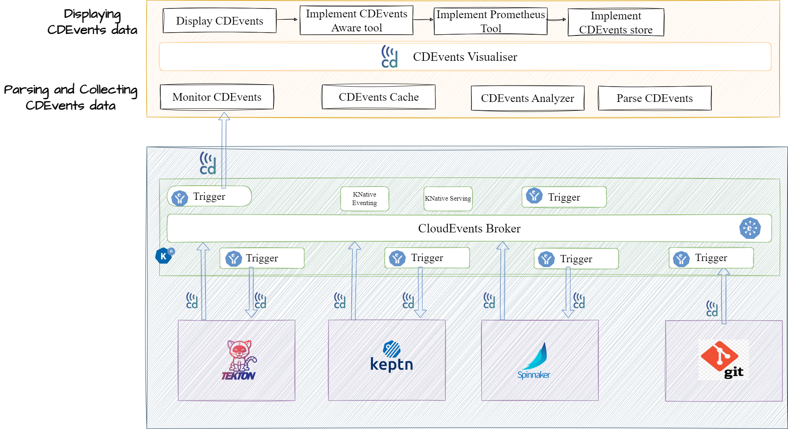

Hello, CDEvents PoC Visualization Demo at 15:05!!!
This page was built and deployed by using CI/CD tools GitHub, Tekton, Keptn and Spinnaker
Showing how CI/CD tools interact with each other and visualize CI/CD workflow from change being committed to deployment using CDEvents!!
